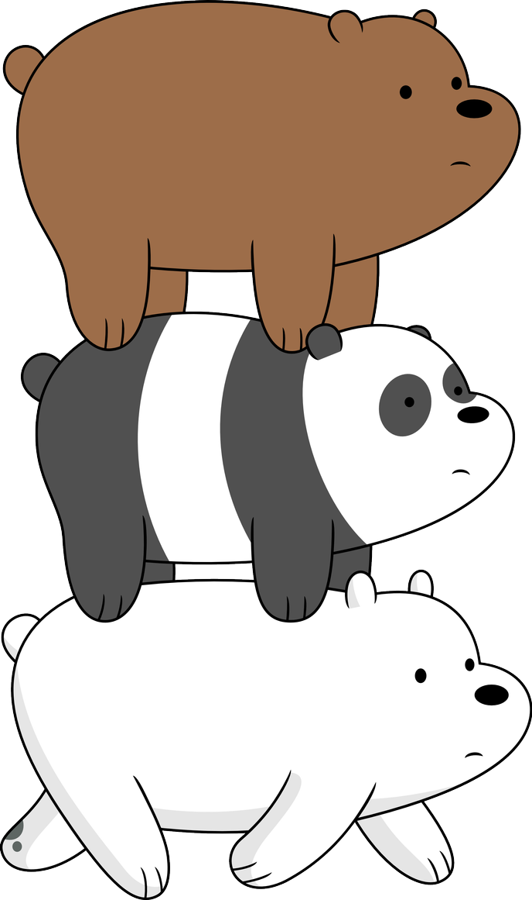

Panda es uno de los tres protagonistas principales de Escandalosos. Es el hermano del medio y, según los demás, el vínculo que los mantiene unidos. Tiene amplios conocimientos sobre tecnología, como dispositivos electrónicos y redes sociales, y la cultura asiática, como mangas y kpop. Es un oso panda, por lo que su cuerpo está cubierto de pelaje negro y blanco; es más bajo que sus hermanos y con una estructura más ancha.
Aunque es el hermano más inseguro de todos, es muy alegre y le encanta pasar el tiempo en su teléfono celular; también es sensible y se enamora muchas veces de chicas que conoce por internet. Le gusta pasear en el centro comercial y dibujar.
Panda hace una torre con sus hermanos al pasear.
